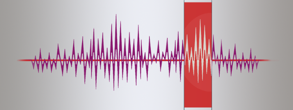

Play a range within an audio asset
Warning
Приносим свои извинения за неудобства. Для этой страницы нет перевода на русский язык. Она будет отображаться на английском языке.
Intermediate Programmer
You can have Stride play only certain portions of an audio asset. This means, for example, that you can create multiple samples from a single audio asset by specifying different ranges in different SoundInstance objects.

You can use the following properties, methods, and structures:
| Property, method, or structure | Function |
|---|---|
| TotalLength | The total length of the sound. |
| SoundInstance.SetRange(PlayRange) | Sets the time range to play within the audio asset. |
| PlayRange | Time information, including the range's starting point and length. |
| SoundInstance.Position | Gets the current play position as TimeSpan. |
For example:
//Assume sample length is 4 seconds.
var length = mySound.TotalLength;
var begin = TimeSpan.FromSeconds(2);
var duration = TimeSpan.FromSeconds(2);
mySoundInstance.SetRange(new PlayRange(begin, duration));